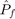

Examples / Reliability assessment / mc
This file is a complete demo of the capability of the mc function from the CODES toolbox.
Contents
Documentation
The documentation for the mc function can be found here.
Set rng
Set random number generator seed:
rng(0)
Simple linear example
Compute the CMC  on a simple linear example:
g=@CODES.test.lin;
res_mc=CODES.reliability.mc(g,2,'vectorial',true);
disp(res_mc)
Pf: 0.0014
beta: 3.0000
LS_count: 1000000
CoV: 2.7198
CI_Pf: [0.0013 0.0014]
CI_beta: [2.9841 3.0166]
Ensure a CoV of variation of at most 1%:
res_mc=CODES.reliability.mc(g,2,'vectorial',true,'CoV',1); disp(res_mc)
Pf: 0.0013
beta: 3.0041
LS_count: 7506374
CoV: 0.9995
CI_Pf: [0.0013 0.0014]
CI_beta: [2.9982 3.0102]
Sampler or Tinv
Sampler and Tinv are mutually exclusive and there almost always exist an equivalent from one to another. For example, for exponential distribution:
sampler=@(N)exprnd(0.5,N,2); Tinv=@(u)expinv(normcdf(u),0.5); res_mc1=CODES.reliability.mc(g,2,'vectorial',true,'CoV',1,'sampler',sampler); res_mc2=CODES.reliability.mc(g,2,'vectorial',true,'CoV',1,'Tinv',Tinv); CODES.common.disp_matrix([res_mc1.Pf res_mc2.Pf;res_mc1.beta res_mc2.beta;... res_mc1.CoV res_mc2.CoV],{'Pf','beta','CoV'},{'Sampler','Tinv'})
Sampler Tinv Pf 0.00194826 0.00197048 beta 2.88642 2.88285 CoV 0.999675 0.999865
In thegeneral case, the sampler function can be slightly more involved. For example, if the joint PDF is defined by 2 independent gaussian with respective mean 5 and 3 and respective standard deviation 2 and 1, a sampler function should read:
sampler=@(N)normrnd(repmat([5 3],N,1),repmat([2 1],N,1)); res_mc1=CODES.reliability.mc(g,2,'vectorial',true,'CoV',1,'sampler',sampler); disp(res_mc1)
Pf: 0.9536
beta: -1.6806
LS_count: 1000000
CoV: 0.0221
CI_Pf: [0.9532 0.9540]
CI_beta: [-1.6849 -1.6764]
Save Monte-Carlo samples
res_mc=CODES.reliability.mc(g,2,'vectorial',true,'store',true); disp(res_mc)
Pf: 0.0014
beta: 2.9989
LS_count: 1000000
CoV: 2.7148
CI_Pf: [0.0013 0.0014]
CI_beta: [2.9830 3.0155]
X: [1000000x2 double]
Y: [1000000x1 double]
Use user defined random sample
res_mc=CODES.reliability.mc(g,normrnd(0,1,1e5,2),'vectorial',true);
disp(res_mc)
Pf: 0.0011
beta: 3.0673
LS_count: 100000
CoV: 9.6173
CI_Pf: [8.7642e-04 0.0013]
CI_beta: [3.0153 3.1292]
Compute sensitivities dPfdtheta
Here are two examples on how to compute sensitivities of the estimated probability of failure. See mc help for details on the options.
Using a simple standard gaussian space and a linear limit state:
d=3; g=@(x)-x(:,2)-x(:,1)+d; beta=@(mus)(d-sum(mus))/sqrt(2); dbetadtheta=-1/sqrt(2)*ones(1,2); dPdfdtheta=@(mus)-dbetadtheta*normpdf(-beta(mus)); lnPDF=@(x,mus)sum(log(normpdf(x,mus,[1 1])),2); dlnPDF=@(x,mus)bsxfun(@minus,x,repmat(mus,size(x,1),1)); tic; res_mc=CODES.reliability.mc(g,2,'vectorial',true,'lnPDF',lnPDF,'theta',[0 0]); time_ln=toc; tic; res_mc1=CODES.reliability.mc(g,2,'vectorial',true,'dlnPDF',@(x)dlnPDF(x,[0 0])); time_dln=toc; CODES.common.disp_matrix([res_mc.dPfdtheta res_mc.dbetadtheta time_ln;... res_mc1.dPfdtheta res_mc1.dbetadtheta time_dln; dPdfdtheta([0 0]) dbetadtheta 0],{'ln','dln','ref'},... {'dPfdtheta1','dPfdtheta2','dbetadtheta1','dbetadtheta2','time'});
dPfdtheta1 dPfdtheta2 dbetadtheta1 dbetadtheta2 time ln 0.0294346 0.0297914 -0.701841 -0.710351 23.0342 dln 0.0296074 0.0294111 -0.70858 -0.703883 0.091404 ref 0.0297326 0.0297326 -0.707107 -0.707107 0
Compute sensitivities dPfdz
Using a simple standard gaussian space and a linear limit state:
d=3; z=[1 2]; g=@(x)deal(-sum(z)-x+d,-ones(size(x,2),1)); Pf=@(z)1-normcdf(d-sum(z)); beta=@(z)-norminv(Pf(z)); dPfdz=@(z)normpdf(d-sum(z)); dbetadz=@(z)-dPfdz(z)/normpdf(-beta(z)); res_mc=CODES.reliability.mc(g,1,'vectorial',true,'nz',2); CODES.common.disp_matrix([res_mc.dPfdz res_mc.dbetadz;... dPfdz(z) dPfdz(z) dbetadz(z) dbetadz(z)],{'est','ref'},... {'dPfdz1','dPfdz2','dbetadz1','dbetadz2'});
dPfdz1 dPfdz2 dbetadz1 dbetadz2 est 0.380407 0.380407 -0.953539 -0.953539 ref 0.398942 0.398942 -1 -1
Copyright © 2015 Computational Optimal Design of Engineering Systems (CODES) Laboratory. University of Arizona.
|
|
Computational Optimal Design of Engineering Systems |

|